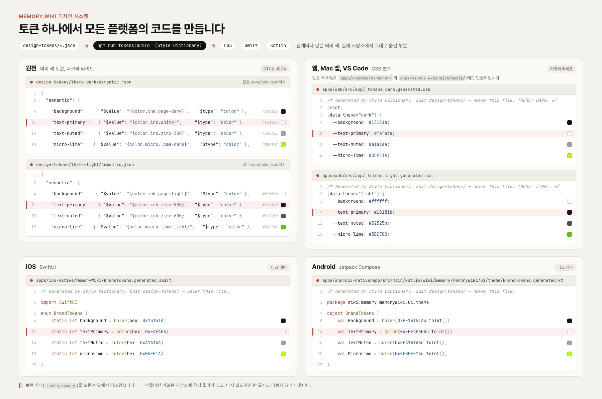

Case 022026Raymind.AI
memory.wikiAI가 바뀌어도 맥락은 그대로
어떤 AI를 쓰든 내 자료와 맥락을 그대로 넘겨주는 지식 저장소입니다. 기획, 디자인, 개발을 단독으로 맡아 웹, Mac, iPhone, Android 앱, Chrome, Safari, VS Code 확장, CLI, MCP 서버까지 아홉 개 플랫폼에 출시했습니다.
memory.wiki↗- 역할
- 1인 개발. 기획, 제품 디자인, 개발
- 기간
- 2026년 3월 ~ 9월
- 출시
- App Store, Google Play, Chrome Web Store, VS Code Marketplace, npm
- 읽는 AI
- Claude, ChatGPT, Gemini, Cursor 등

프로젝트 소개
memory.wiki에 모은 문서는 주소 하나로 어떤 AI에게든 그대로 넘어갑니다. Claude에서 쌓은 맥락을 ChatGPT나 Cursor에서 처음부터 다시 설명할 필요가 없습니다.
1인 개발로, 기획과 제품 디자인은 직접 하고 개발은 Claude Code로 진행했습니다. 화면이 늘어나도 경험이 달라지지 않도록 데이터와 렌더러를 하나로 두는 구조를 먼저 정했고, 매일 실무에 쓰면서 필요한 화면을 하나씩 늘렸습니다.
- 개발
- 1인 개발, Claude Code
- 단일 렌더러
- 웹, Chrome과 VS Code 확장, CLI, MCP 서버, Mac 앱이 하나의 데이터와 렌더러를 씀
- MCP 서버
- AI가 직접 쓰는 도구 29개
- 배포
- App Store(Mac, iPhone, Safari
확장), Google Play, VS Code Marketplace, Chrome Web Store, npm - 검증
- 세 AI에 같은 질문을 적용하는 벤치마크를 직접 설계
- 해결하려 했던 사용자 문제
- AI와 한 작업은 탭을 닫는 순간 사라집니다. 사용자는 같은 맥락을 Claude에, Cursor에, 한 달 뒤 Claude에 또 설명합니다.
- 왜 중요했나
- AI로 하는 일은 늘어나는데 쌓이는 것은 없었습니다. 여러 AI를 함께 쓰는 사람과 조직에게 맥락은 가장 큰 자산인데, 도구마다 갇혀 있었습니다.
- 어떤 과정으로, 어떤 선택을 했나
- 앱보다 주소 하나를 제품의 중심으로 정했습니다. 일하는 곳에서 바로 모으고, AI가 뒤에서 정리하고, 어떤 AI든 주소 하나로 읽게 했습니다.
- 결과와 배운 것
- 자료를 직접 넣은 조건에서 세 AI 모두 정답률
95%였고, 답은 서로 93.3% 일치했습니다. 이 값은 실제 사용 경로가 아닌 상한선입니다.
웹부터 MCP 서버까지
MCP 도구
세 AI 각각의 정답률
한 번 쓰면, 어디서 열어도 같은 문서입니다.
편집기에서 쓰는 순간 문서에 주소가 생깁니다. 같은 문서를 VS Code, Chrome, Mac 앱, 터미널, AI 도구 안에서 열고 고칠 수 있고, 어디서 열어도 같은 렌더러가 같은 모습으로 보여 줍니다. 이동 중에는 iPhone과 Android 앱, Safari 확장으로 담고 읽습니다.


AI로 하는 일은 늘어나는데, 쌓이는 것은 없었습니다.
AI와 한 작업의 대부분은 탭을 닫는 순간 사라집니다. 이 때문에 같은 맥락을 Claude에 다시 설명하고, Cursor에 또 설명하고, 한 달 뒤 Claude에 또 설명합니다.
저 역시 새 모델과 도구가 나오면 바로 테스트하고, 일마다 다른 AI를 씁니다. 도구를 바꿀 때마다 맥락을 처음부터 다시 쌓아야 했습니다. AI로 하는 일의 양은 계속 늘어나는데, 축적되는 것은 없었습니다.

맥락이 자산인데, 도구마다 갇혀 있었습니다.
사람은 한 AI에 머물지 않습니다
AI마다 잘하는 일이 달라 일마다 다른 AI를 씁니다. 각 AI의 기억은 그 AI 안에만 있어서, 도구를 바꿀 때마다 맥락이 끊깁니다.
반복 설명에 시간이 낭비됩니다
같은 배경을 매번 다시 붙여 넣는 일은 작아 보여도, AI를 많이 쓸수록 큰 시간을 차지하는 반복 작업이 됩니다.
같은 자료면 같은 답이어야 믿습니다
같은 자료를 읽고도 AI마다 다르게 답하면 사람은 무엇을 믿어야 할지 모릅니다. 창작 도구도 같습니다. 에디터에서 본 것이 플레이에서도 그대로 움직여야, 만드는 사람이 도구를 믿고 씁니다.
앱보다 주소 하나를 제품의 중심으로 정했습니다.
주소 하나면 어떤 AI에게나 통합니다
memory.wiki 주소를 AI에게 붙여 넣으면, AI는 그대로 읽을 수 있는 깨끗한 문서를 받습니다. 설치할 것도, 배울 형식도 없습니다. 다른 기능은 모두 이 문서를 더 쓸모 있게 만들기 위한 것입니다.
일하는 곳에서 바로 모으기
Chrome, VS Code, Cursor, Claude, Mac 앱, CLI, MCP에서 바로 모읍니다. 매일 직접 쓰면서 필요한 진입점을 하나씩 더했습니다.
정리는 AI가 뒤에서, 구조는 사람이
문서, 묶음, 허브 세 단계로 나눴습니다. 묶음에는 AI가 뽑은 주제와 관계 그래프가 붙고, 허브는 모든 묶음의 개념을 잇습니다. 사람은 구조만 정합니다.
모든 화면이 같은 데이터를 읽습니다
웹, 확장, Mac 앱, AI가 받는 문서가 모두 같은 렌더러와 같은 그래프를 씁니다. 화면에서 보는 그래프가 곧 AI가 받는 내용입니다.

권한 규칙은 데이터 쪽에서
초안은 공개 주소로 노출되지 않고, 권한은 문서를 제공하는 쪽에서 검사합니다. 읽는 쪽이 브라우저든 AI든 같은 규칙을 따릅니다. 그래프가 문서보다 오래되면 AI가 알 수 있게 표시합니다. 한 번 만든 주소는 만료되지 않습니다.
세 AI에게 같은 질문을
같은 자료와 직접 만든 질문으로 Claude,
모든 플랫폼에 토큰 하나
색, 글자, 간격, 모서리, 움직임을 하나의 디자인 토큰으로 관리합니다. 라이트와 다크의 시맨틱 컬러에서 Style Dictionary가 웹, Mac 앱, VS Code 확장의 CSS와 iPhone 앱의 Swift, Android 앱의 Kotlin을 만들고, 만들어진 파일에는 손으로 고치지 말라고 적혀 있습니다.
시작은 버그였습니다. 강조색 16가지가 웹 설정, 스타일시트, 서버의 허용 값 목록, Android의 열거형, 네 곳에 손으로 따로 적혀 있었고, 서버 쪽 목록에 빠진 색이 있어 Android에서 고른 색이 오류 표시 없이 저장되지 않았습니다. 색을 더하거나 이름을 바꾸는 곳을 JSON 파일 하나로 정하고, 웹, 서버, Android가 거기서 만든 것을 읽게 했습니다.


자료를 직접 넣은 조건에서 세 AI의 정답률이 같았습니다.
Claude,
같은 자료를 읽은 세 AI의 답이 서로 일치한 비율.
2026년 5월, 공개 문서 71개와 직접 만든 질문 20개로 측정했습니다. 자료를 프롬프트에 직접 넣은 조건이라 상한선입니다. AI가 주소만 받아 스스로 읽는 실제 경로는 다음 측정으로 남겨 두었습니다.
출시한 플랫폼
- 웹memory.wiki
- Mac 앱과 Quick LookMac App Store
- iPhone 앱App Store
- Android 앱Google Play
- Chrome 확장Chrome Web Store
- Safari 확장App Store
- VS Code 확장Marketplace
- CLI와 MCP 서버npm
여러 화면, 여러 AI에서 같은 경험을 지키며 배운 네 가지
-
01
기술보다 전달 방식이 제품입니다
검색 정확도도 중요하지만, 어떤 AI든 주소 하나로 같은 맥락을 받게 하는 전달 방식이 더 중요하다고 판단했습니다. 이에 따라 그래프를 앱 안에 두지 않고, AI가 받는 문서 안에 함께 실었습니다.
-
02
일관성은 화면이 아니라 데이터와 규칙에서 나옵니다
웹, 확장, Mac 앱, AI가 받는 문서가 같은 렌더러와 같은 그래프를 읽게 하자, 편집기와 보기 화면이 다르게 보이는 문제가 구조적으로 사라졌습니다. 색과 간격은 토큰으로 관리해 라이트 모드와 다크 모드를 한 체계에서 만들었습니다.
-
03
이상적인 조건의 점수는 상한선입니다
95%는 자료를 프롬프트에 직접 넣은 조건의 점수였습니다. AI가 주소만 받아 스스로 읽는 실제 경로는 따로 측정해야 한다는 것을 결과표에 함께 적었습니다. -
04
권한 규칙은 데이터 쪽에서 지킵니다
권한을 화면마다 검사하지 않고 문서를 제공하는 쪽에서 검사하자, 브라우저든 확장이든 AI든 같은 규칙을 따르게 됐고 새 화면이 생겨도 규칙에 빈틈이 생기지 않았습니다.